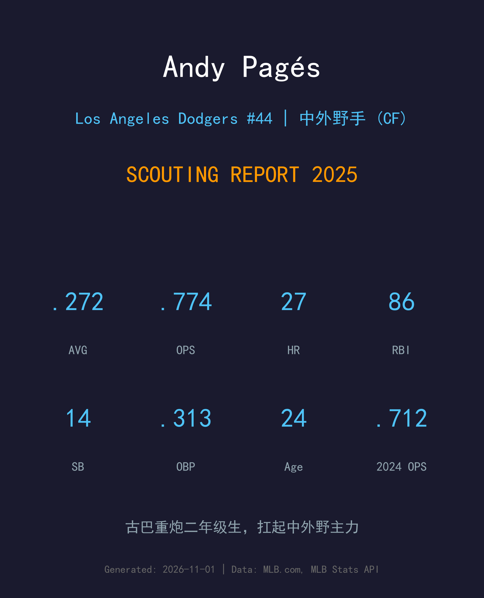
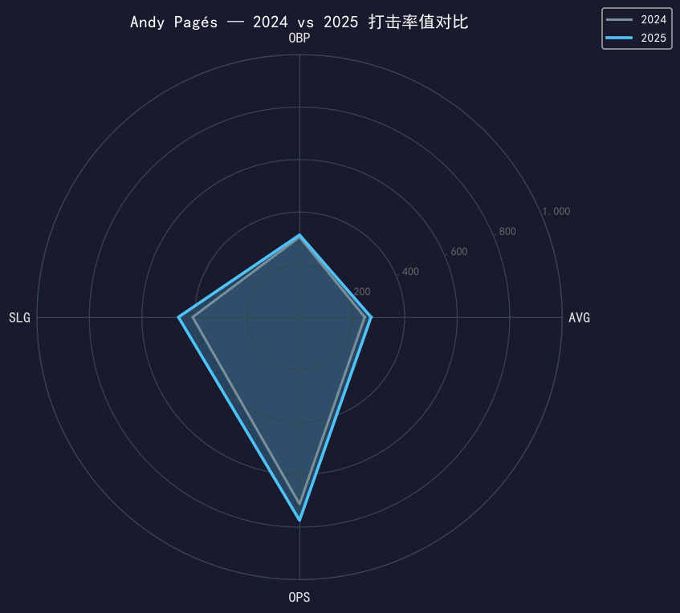
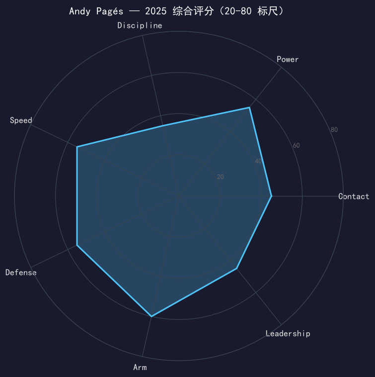

Los Angeles Dodgers #44 | 中外野手 | 右打 | 古巴重炮二年级生

Andy Pagés 是道奇 2025 赛季最大的内部惊喜之一——这位 24 岁的古巴外野手在第二个大联盟赛季就坐稳中外野主力，缴出.272/.313/.461、27 轰 86 分打点的全面成绩单，OPS .774 较新秀年的 .712 再上一层。
他的 power-speed 组合是道奇农场近年少有的：27 支全垒打仅次于队内外野重炮群，14 次盗垒在 212 磅的体格下更显难得。156 场出赛几乎全勤，守备端覆盖范围与臂力都达到联盟中上水准，是冠军外野的防守中枢。
需要直视的短板是选球：整个赛季只有 29 次保送（保送率 4.6%），135 次三振，上垒几乎全靠击球落点。季后赛他的棒次出现历史性熄火（详见季后赛章节），如何把常规赛的击球质量带进十月的投手战，将决定他的天花板。
4 月 16 日首秀，全年 116 场缴出 13 轰、46 分打点，OPS .712，立刻锁定道奇外野未来核心的位置。
156 场全勤、27 轰 86 打点、14 盗，成为道奇打线中段最稳定的右打火力，随队夺得世界大赛冠军。
以主力中外野手身份出战 2025 年全部季后赛轮次，随队七战击败蓝鸟完成二连霸。

| 赛季 | G | PA | AVG | OBP | SLG | OPS | HR | RBI | 2B | BB | SO | SB |
|---|---|---|---|---|---|---|---|---|---|---|---|---|
| 2024 | 116 | 443 | .248 | .305 | .407 | .712 | 13 | 46 | 23 | 29 | 108 | 1 |
| 2025 | 156 | 624 | .272 | .313 | .461 | .774 | 27 | 86 | 27 | 29 | 135 | 14 |
二年级生全方位的升级：AVG +24 点、SLG +54 点、OPS +62 点，全垒打从 13 支翻倍到 27 支，打点从 46 涨到 86。最值得注意的两个信号：盗垒从 1 次跳到 14 次（身体状态与跑垒侵略性同时打开），以及 181 个打席的增加几乎没让率值下滑——他的击球质量在更大样本下站住了。
Pagés 的挥棒属于典型的古巴重炮流派：上棒快、出手短、拉打倾向明显。2025 年他把击球初速稳定转化为实战长打——27 轰中有大量 middle-in 的快球被扫出左外野看台。SLG .461 相对 AVG .272 的落差（ISO .189）说明他的长打不是偶尔爆发，而是可持续的产出结构。
整个赛季 624 个打席只有 29 次保送，保送率 4.6% 排在联盟主力打者的末段。他的 OBP 只比 AVG 高 41 点，意味着上垒几乎完全依赖击球本身。三振率 21.6% 对 power 型外野手尚可接受，但如果不能把 chase rate 压下来，当击球落点运气回归时率值会明显波动。这是球团发展部门给他的第一课题。
212 磅的体格并没有拖累他的守备移动：中外野覆盖范围联盟中上，助杀数在国联外野手中名列前茅，臂力评分全队第一档。14 次盗垒只被抓少数几次，跑垒嗅觉比体型看起来好很多。简而言之，他是一个少见的「重炮级身体 + 工具型外野技能」组合。
从春训开始就没有人再怀疑他属于大联盟：开季即坐稳中外野，整季 156 场几乎全勤，是道奇打线里出勤率最高的外野手。常规赛的他是球队稳步前行的缩影——不抢头条，但 27 轰 86 打点的产出稳稳放在打线中段。唯一的阴影在十月（见下节），但那不改写他作为二年级生交出的整体答卷。

攻守兼备的古巴重炮，上升轨道明确的主力中外野手
B 级 / 主力级中外野手
道奇 2025 季后赛之路：外卡轮 2-0 红人 → NLDS 3-1 费城人 → NLCS 4-0 酿酒人 → 世界大赛 4-3 多伦多蓝鸟（二连霸）。
| G | PA | AVG | OBP | SLG | OPS | HR | RBI | BB | SO |
|---|---|---|---|---|---|---|---|---|---|
| 16 | 55 | .078 | .078 | .098 | .176 | 0 | 1 | 0 | 11 |
Andy Pagés 的 2025 年证明了他属于大联盟的先发层级，而他只有 24 岁。接下来的问题只有一个：他能否把「天赋」变成「统治力」。选球是他与明星级外野手之间唯一看得见的那道门——如果保送率能爬回 8%，他的 OBP 会自然站上 .350，整份成绩单就会焕然一新。
2026 目标：保送率提升至 7%+，季后赛率值回到 .250 以上
中期：稳定在 30 轰级别的年度候选，争夺生涯首次全明星
长期：道奇未来五年中外野的默认答案，金手套级守备可期
Andy Pagés 出生于古巴哈瓦那，是当地棒球体系培养出的又一位重炮外野手。2020 年，他以国际自由球员身份与道奇签约，随后因疫情停摆的小联盟赛季让他的美国职业生涯起步推迟了一年——这段等待反而让他进入大联盟时技术更加成熟。
2024 年 4 月 16 日，他在大联盟首秀赛季就展现出超越年龄的长打能力，13 轰的新秀成绩单让道奇放心地把中外野交给了他。仅仅两年后，24 岁的他已经手握一枚世界大赛戒指，并且是那支冠军队打线中段最常被提及的名字之一。
在古巴外野手的 lineage 里，Pagés 的体格与挥棒让人想起更早一批从哈瓦那走向大联盟的重炮；而他的守备与跑垒技能，则让他在「纯炮」与「工具人」之间找到了一个对现代棒球极其友好的位置。